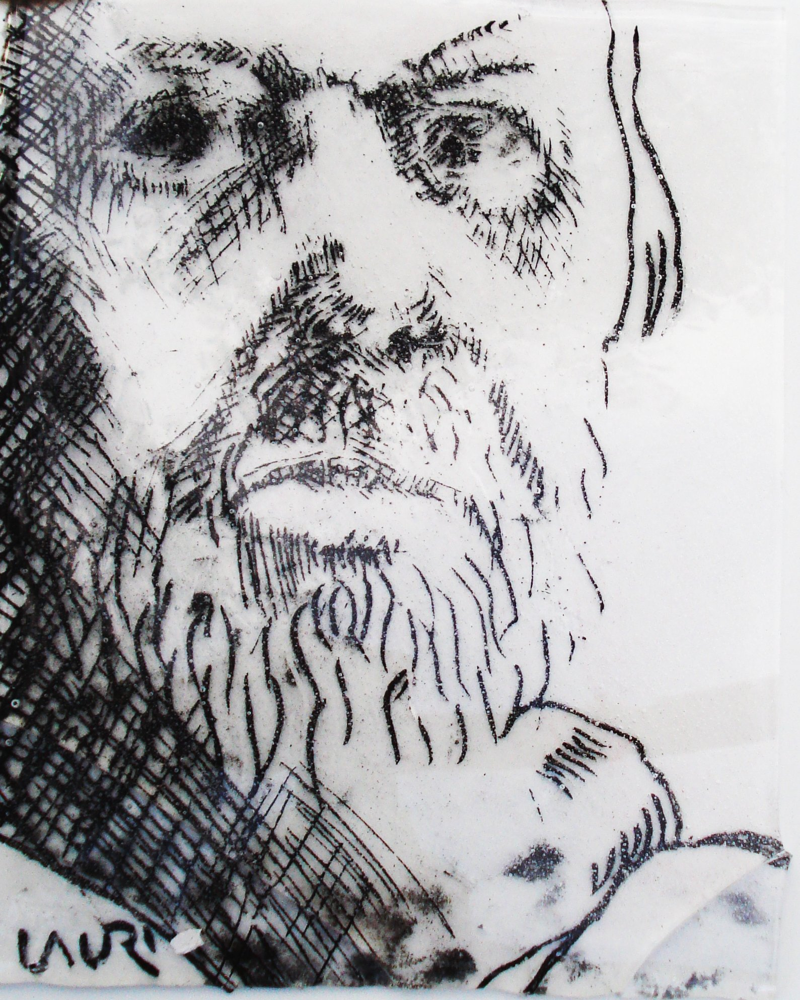

Ennen ajanlaskumme alkua uunitekniikka jäi tuottavamman lasinpuhalluksen jalkoihin. Sitten tuottavuus näytti nurjan puolensa. Lasiteollisuus eriytti muotoilun ja tekemisen eri ammattilasille. Tähän syntyi 1970-luvulla reaktiona studiolasi-liike. Lasitaiteilijat tarttuivat itse materiaaliin, sen omilla ehdoilla. Jokainen työ on uniikki,vaikka sukulaisuutta niiden välillä onkin.
Uusi työ on minulle aina haaste. Milloin tekniikan, milloin ilmaisun taholta. Siihen on vastattava miettimällä ja kokeilemalla. Studiolasi ei ole halpaa. Siksi pidän tärkeänä että luomani esineet jaksavat tuottaa mielihyvää pitkään. Värimaailmassani on pohjoisen valon hillitty vivahdeikkuus. Muotokieli on niukkaa rauhallisuutta.
Mandariini tilasi mestari Wu'lta kanaa esittävän piirroksen.
Mestari Wu sanoi, että kana on vaikea aihe, antakaa minulle
kaksi vuotta aikaa. Työn valmistuttua mandariini paljoksui
hintaa, "eiko 2000 juania ole paljon viidestä siveltimen vedosta.
Mestari Wu vastasi " voin kyllä tuoda ne 1300 luonnostakin".
Tähän minä pyrin.
|
Lauri Levanto
Lasinen omakuva |
 |